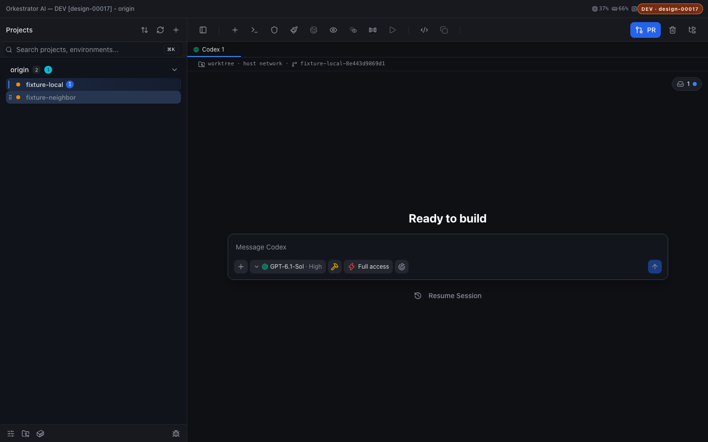

Design tasks / 00017
00017 · Use the blue hover tokens beside blue selections
Problem
At the time of the audit, hover:bg-zinc-* (27),
hover:bg-foreground/[…] (10), hover:bg-muted (63) and
hover:bg-accent (19) outnumber the documented hover:bg-hover (5)
and hover:bg-environment-hover (2). Menus and selects use
focus:bg-zinc-800/80.
Find every instance
grep -rnE --include=*.tsx "hover:bg-(zinc-[0-9]+|foreground/|muted|accent)" apps/web/src | grep -v "\.test\."Scope
| Where | What |
|---|---|
apps/web/src/components/ui/dropdown-menu.tsx, select.tsx, context-menu.tsx
|
menu item highlight |
apps/web/src/components/chat/SuborkGroup.tsx:81,159,204 |
foreground wash rows |
apps/web/src/components/agent-mail/AgentMailPanel.tsx:263 |
foreground wash row |
apps/web/src/components/projects/GitHubRepositoryPicker.tsx:122 |
muted wash row |
sidebar, files panel and any list that shows a blue selected row |
the cases the rule actually targets |
Approach
-
Find rows and lists that can show a blue selected state and give them
hover:bg-hover(orenvironment-hoverfor environment rows). - Decide the menu question below before touching
ui/. -
Leave toolbar ghost buttons on
hover:bg-elevated; that is the documented ghost behavior.
Decisions
The chosen option is recorded in Notes.
Menus and selects (no selected row inside them)
Required evidence: before and after
Every slot needs a before image (captured first, before editing any code) and an
after image. Use the same profile, fixture data, theme, viewport and zoom for both.
Save PNGs under design/images/00017/ using the exact file names shown. See
How to capture.
Sidebar with one row selected and another hovered desktop 1440×900
Select an environment and hover its neighbor.


A foreground-wash list row on hover desktop 1440×900
Hover a subork group row or a mail panel row.


Out of scope
- Ghost toolbar buttons.
- Selection color tokens.
Verification
mise run test:logged -- --name web-typecheck -- bun run --cwd apps/web typecheck
NODE_ENV=test mise run test:logged -- --name ui-menus -- bun --cwd=apps/web test src/components/ui --parallel=2 --only-failures
mise run format:check
mise run lint
React tests in this repo need NODE_ENV=test in build shells. Real-browser
check: use a throwaway dev:test profile named design-00017, never
a production instance.
Acceptance checklist
-
Before images captured on unmodified code for every slot, and committed under
design/images/00017/. - After images captured after the change, with the same profile, data, theme, viewport and file names, and committed beside the before images.
- Every image slot on this page shows a picture (the evidence badge reads “6 / 6”).
- I have looked at each pair and written what changed, and anything that did not change that should have, in Notes.
- Hits were classified in Notes, and each decision is recorded with the option chosen.
-
Type-check and the owning tests pass.
mise run format:checkandmise run lintpass. - The browser check includes a page reload and, for layout-affecting changes, the narrow viewport.
- DESIGN.md or PRODUCT.md updated if needed: Add the menu exception to Colors → Selection if kept.
- Status set to Done on this page and in the index.
Notes
Hover review
-
Mail conversation rows and enabled GitHub repository results use
hover:bg-hover. Disabled repository results stay transparent. The subork group and child buttons pair the same fill with an inset blue hairline so hover is visible on navy transcripts. -
Available file and folder rows in the Files tree use
hover:bg-hover. A file selection keeps its accent fill and a folder drop target keeps its blue fill and ring. -
Pull-request rows and Linear board cards use
hover:bg-hover/50on eligible neighbours. Feature rows usehover:bg-hover/30beside their lighter selection fill. The shared sidebar already usesenvironment-hoveron environment rows andhoveron project rows.
Retained washes by control
Paths are relative to apps/web/src/components/. Line numbers refer to the
source at the time of this review and identify each match from the audit search.
Neutral selection and navigation
-
build-pipeline/PipelineKeyInformation.tsx:241— section navigation with a muted active fill. -
chat/AgentModelPicker.tsx:237,1174,1349— platform and favourites controls with muted active fills. -
chat/QuestionCard.tsx:297,775,776— answer options and question tabs with muted or surface-coloured selection. -
chat/NativeAttachmentMenu.tsx:264andlayout/OpenFileDialog.tsx:256— file options with neutral accent selection. -
design/DesignLayerTree.tsx:690— layer tree with a muted selected row. -
graph-designer/GraphLibraryList.tsx:198andgraph-designer/GraphTypeEditor.tsx:506— graph and type rows with neutral accent selection. -
settings/AgentPluginsBrowser.tsx:224,settings/FullscreenSettingsLayout.tsx:180andsettings/SkillsSettings.tsx:564— plugin, section and skill navigation with zinc fills and an active edge. -
settings/usage/UsageSummary.tsx:155— platform usage filter with muted selection. -
claude/ClaudeTmuxChatTab.tsx:1313,1314— interactive mode toggle with a muted active fill.
Temporary choices in pickers and suggestions
agent-mail/AgentMailPanel.tsx:390— add a recipient.-
chat/FileMentionMenu.tsx:100,chat/SlashCommandMenu.tsx:269,projects/CoordinatorActionSearch.tsx:175andsidebar/ProjectSearchBar.tsx:198— transient keyboard highlights in search and suggestion results. -
chat/NativeResumeSessionDialog.tsx:290,claude/ResumeTmuxSessionDialog.tsx:110andnative-agent/AgentNativeTab.helpers.tsx:320— resume a session or choose its platform. -
files-panel/AllFilesView.tsx:397,410— workspace root and folder destinations for Move to….
Rows that open, disclose or jump without a blue selected fill
-
build-pipeline/PipelineFlowView.tsx:1190,1201andbuild-pipeline/PipelineKeyInformationTab.tsx:450— open validation or worker sessions and jump to key information. -
chat/GoalPill.tsx:76,chat/GoalTile.tsx:63,chat/JsonPayloadPart.tsx:100,chat/MailTile.tsx:333andchat/rich/RichDetails.tsx:52— open or expand goal, payload, mail and detail content. -
chat/NativeMessage.file-parts.tsx:389andchat/rich/FilePreview.tsx:473— open file attachment previews. -
files-panel/ChangeFileRowItem.tsx:107andfiles-panel/ChangedFileItem.tsx:36— open a diff from the Changes lists. -
graph-designer/GraphCompilePanel.tsx:95andgraph-designer/GraphInspector.tsx:773— jump to a graph diagnostic or member. -
kanban/KanbanCard.tsx:277andlinear/LinearTicketsView.tsx:1533— open an item from the Kanban board or Linear list. layout/AgentInfoButton.panels.tsx:1550— expand agent information.-
pull-requests/PullRequestCodeTab.tsx:105,pull-requests/PullRequestSummaryTab.tsx:447andpull-requests/PullRequestTimelineTab.tsx:191,248— expand file or comment rows, scan checks, or open an external commit. -
review/ReviewValidationStatus.tsx:547— open the details for a validation result. -
settings/AgentPluginsBrowser.tsx:329,settings/DiskUsageSettings.tsx:245,settings/SelfImprovementLists.tsx:278andsettings/SelfImprovementProgress.tsx:121— open a skill or ticket, expand disk usage, or show stage details.
Standalone actions and controls
-
build-pipeline/PipelineSessionTranscript.tsx:479,chat/NativeChatShell.tsx:797,claude/ClaudeTmuxChatTab.tsx:1549andkanban/FeaturesView.tsx:932— scroll to the latest transcript content. -
chat/AgentModelPicker.tsx:1037andchat/SlashCommandMenu.tsx:336— refresh catalogues. -
chat/MailTile.tsx:374,386— open the worker or the conversation from a mail tile. -
chat/NativeComposeBar.tsx:320andclaude/ClaudeTmuxChatTab.parts.tsx:1224— remove a composer attachment. -
chat/NativeMessage.basic-parts.tsx:1079,1090— open historical or current file diffs. -
chat/QueuedPromptsDialog.tsx:180,265,282,300,314,331,370— retry, edit, steer, move up, move down, remove and keep a queued prompt. chat/SuborkGroup.tsx:204— stop a subork batch.-
chat/rich/FilePreview.tsx:252,711,721,752andchat/rich/MediaBlock.tsx:423— reload or load media, download it, open its workspace file, or invoke a media action. -
claude/ClaudeTmuxChatTab.parts.tsx:1412,1463— switch mode or inspect queued prompts. -
design/DesignAgentDock.tsx:203,design/DesignFrameDownloadMenu.tsx:118,design/DesignFrameView.tsx:413,540,547,555,design/DesignLayerTree.tsx:641anddesign/DesignToolbar.tsx:132,473— dock the panel, open download or frame actions, retry or repair validation, restore a version, and control zoom. -
environments/CreateEnvironmentDialog.tsx:1818,environments/EnvironmentRow.tsx:710,726andenvironments/FeatureBuildFields.tsx:264— restore the default worktree location, retry deletion, open environment actions, or choose reviewers. -
files-panel/FileTreeNode.tsx:355— the row’s separate Move to… button. html/HtmlFileTab.tsx:191— open the linked pages menu.-
kanban/FeaturesView.tsx:640,961,971— close a story tab, refresh Codex status, or send a planning message. -
layout/AgentInfoButton.panels.tsx:62,373,1465,1482— display metric details or diagnostics and run primary or secondary server actions. -
projects/ProjectLauncher.tsx:112andsidebar/ActivityEnvironmentList.tsx:162— create an environment. -
settings/OpenCodeProvidersSection.tsx:330— choose a provider to connect. -
terminal/ComposeBar.tsx:591,terminal/TerminalCornerToolbar.tsx:69,82,terminal/TerminalHistoryPanel.tsx:121,131andterminal/TerminalWarningBanner.tsx:35— close an image preview, finish setup, open or page through history, return to the live terminal, and dismiss a warning.
Menu decision
Kept the neutral highlight for dropdowns, context menus and selects without a blue selected row. A blue menu highlight would extend the tint to neutral popovers. Documented the exception in Colors → Neutral → Selection.
-
ui/dropdown-menu.tsx:66,84,115,190— items, checkbox items, radio items and submenu triggers. -
ui/context-menu.tsx:112,130,155— items, checkbox items and radio items. ui/select.tsx:105— options.
Image comparisons
Captured the before images on b2c91abb9, then repeated the same interactions
after the change. Both sets use the same local fixture and synthetic mail in the isolated,
headless design-00017 profile, in dark mode at 1440 × 900, 100% zoom and device
scale factor 1. The browser reloaded before each capture run. The profile ran with host
seeding, agent credentials, and host reachability checks disabled.
-
Sidebar. The blue selection gradient on
fixture-localand the blue hover onfixture-neighboridentify the two states in both images. - Mail list. The hovered Fixture handoff row changes from a grey foreground wash to the blue hover token.
- Dropdown. By activity has the same neutral highlight in both images. By project remains the checked option.